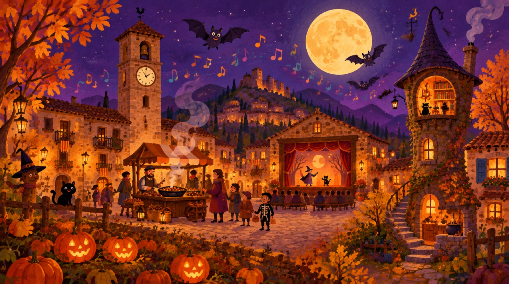
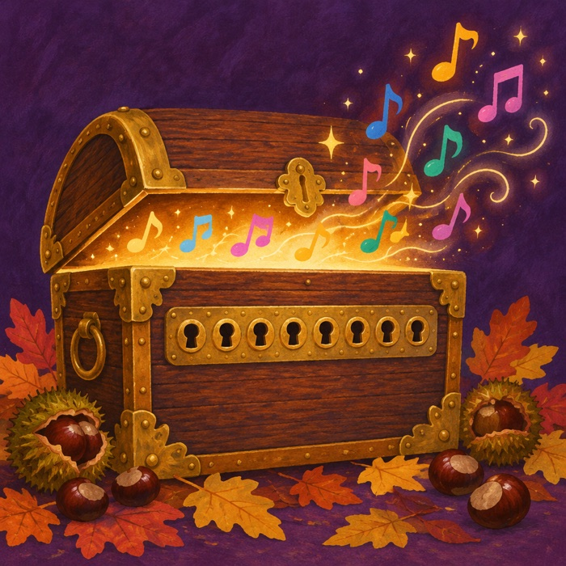

🗺️ Toqueu cada lloc del mapa per començar el seu repte.

La nit de la Castanyada, el Bruixot Estornut (al·lèrgic a la pols de castanya!) va fer un ATXIM! tan fort que la Melodia de la Nit es va trencar en 8 segells escampats pel poble. Recorreu els 8 llocs amb el gat Marrameu, recolliu els segells i col·loqueu-los al bagul encantat.
🗺️ Toqueu cada lloc del mapa per començar el seu repte.


Escriviu cada segell a la seva casella, en l'ordre dels reptes (I → VIII). Cada segell que poseu fa sonar una nota…
Un esternut màgic ha trencat la Melodia de la Nit en 8 segells. Visiteu els 8 llocs del poble, supereu cada repte i col·loqueu els segells al bagul abans que s'acabi el temps.
La música torna a sonar per tot el poble. La Castanyera us convida a castanyes i panellets, i el bruixot promet no estornudar més encanteris.
⌛ 00:00
El bruixot s'ha endut el bagul a la seva torre… La Melodia de la Nit haurà d'esperar a l'any que ve.